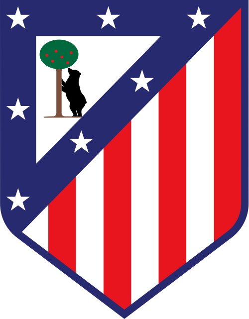
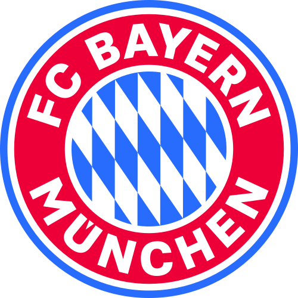
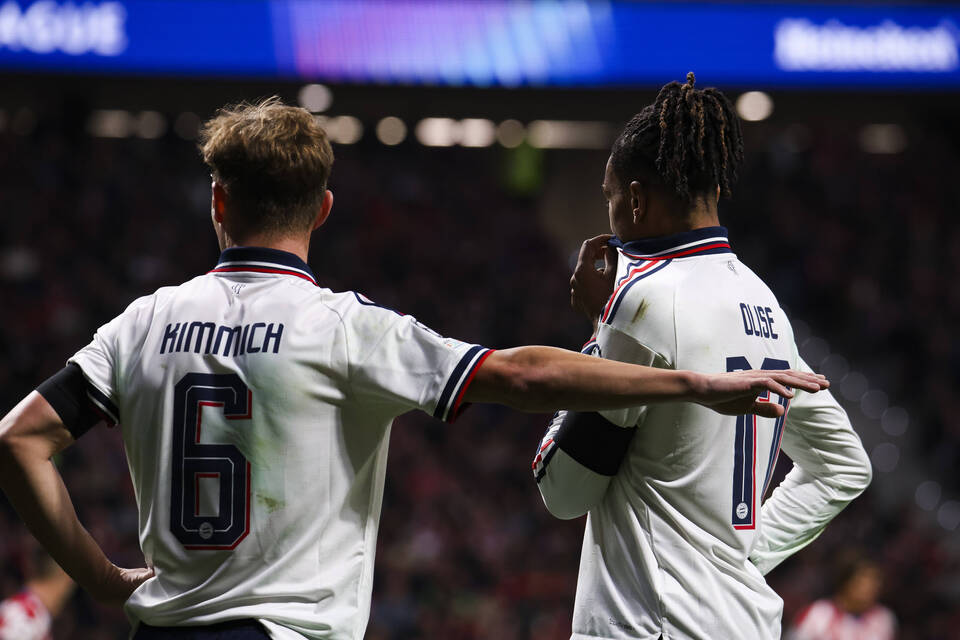
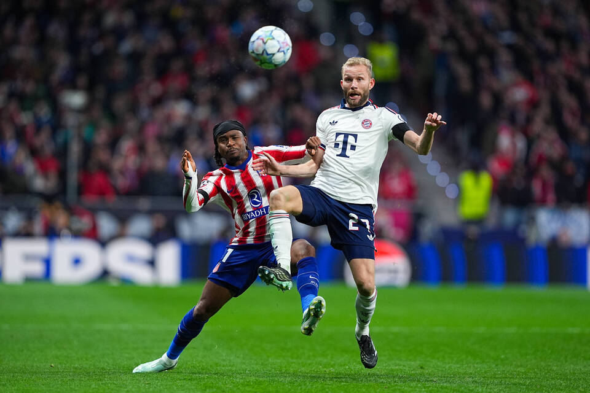

RIYADH AIR METROPOLITANO, MADRID • 3 NOVEMBER 2026

ATLÉTICO MADRID
VS

BAYERN MUNICH
0:2
FULL TIME
RINGKASAN PERTANDINGAN

Bayern Munich tampil dominan di markas Atlético Madrid.
Bayern Munich pulang dari Madrid dengan kemenangan meyakinkan 2-0 setelah menampilkan permainan dominan di ibu kota Spanyol. Dua momen penting hadir pada babak kedua, dimulai dari gol Lennart Karl pada menit ke-54. Karl berhasil merebut bola dari Robin Le Normand yang kurang sigap, lalu dengan tenang mencungkil bola melewati Jan Oblak yang sudah bergerak maju.
Bayern semakin menguasai pertandingan setelah unggul. Pada menit ke-74, mereka menggandakan keunggulan melalui penyelesaian apik Konrad Laimer. Harry Kane mengirimkan umpan lambung yang sangat baik kepada Laimer, yang kemudian menuntaskan peluang dengan penyelesaian klinis dari dalam kotak penalti.
Atlético sebenarnya tampil cukup berani pada babak pertama dan mampu meredam serangan tim tamu. Namun, Los Colchoneros kesulitan menciptakan ancaman berkualitas di sepertiga akhir lapangan. Situasi semakin sulit setelah Bayern membuka keunggulan pada awal babak kedua.
Dominasi Bayern juga terlihat dari statistik expected goals (xG). Atlético hanya mencatatkan 0,83 xG, sedangkan Bayern mencapai 1,77. Hasil ini menjadi modal positif bagi Bayern sebelum bertandang ke markas Mainz pada Sabtu, sementara Atlético akan bersiap menghadapi Barcelona di kandang pada hari yang sama.
Itulah akhir laporan pertandingan kali ini. Terima kasih sudah mengikuti jalannya laga bersama kami!
HIGHLIGHT PERTANDINGAN
MOMEN

Jan Oblak melakukan penyelamatan penting untuk Atlético Madrid.
PENYELAMATAN LUAR BIASA DARI OBLAK!! Kiper Atlético itu menjaga timnya tetap bertahan dalam pertandingan setelah menepis tembakan Dayot Upamecano yang sempat berubah arah dan mengarah ke mistar gawang. Upamecano melakukan akselerasi impresif dari garis tengah sebelum melepaskan tembakan keras dengan kaki kanannya. Namun, Oblak masih mampu menjangkau bola dan menggagalkan peluang tersebut.
STATISTIK PERTANDINGAN
42%Penguasaan bola58%
42%
58%
0,83Expected goals (xG)1,77
0,83
1,77
9Total tembakan19
9
19
3Tembakan tepat sasaran5
3
5
28Sentuhan di kotak penalti lawan38
28
38
2Peluang besar4
2
4
2Peluang besar terlewat2
2
2
363 (81%)Akurasi operan570 (89%)
363
570
1Kartu kuning2
1
2
4Tendangan sudut4
4
4
Urutan statistik: Atlético Madrid — Bayern Munich. Data statistik mengikuti gambar yang diberikan.